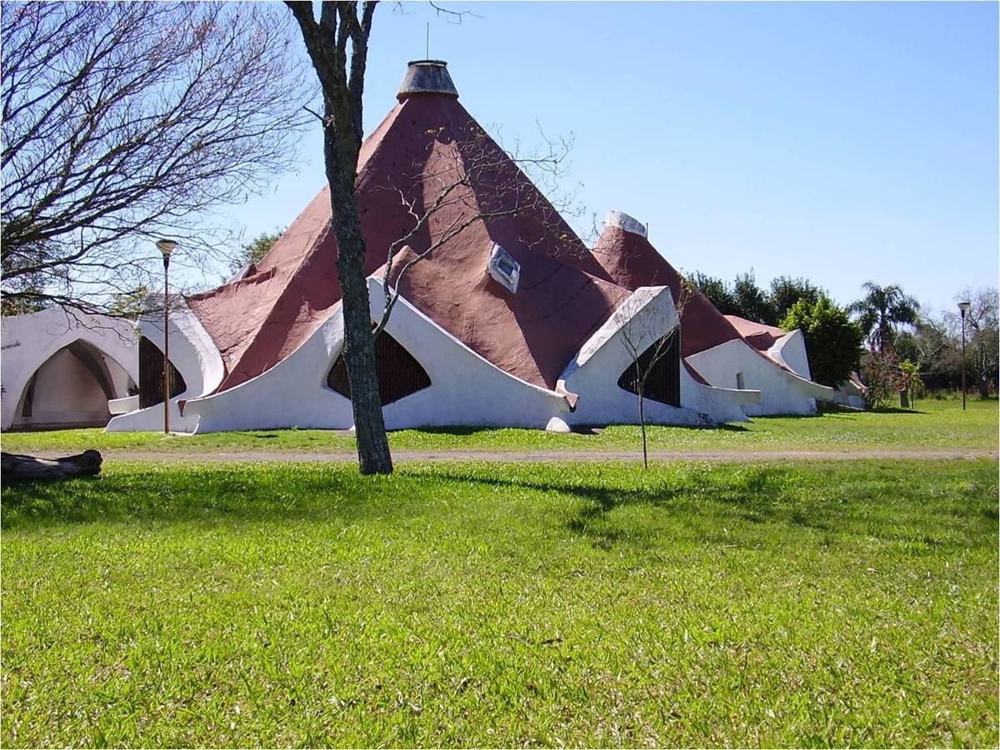

Fondo documental · arquitecto · Argentina
Claudio
Caveri
1928 — 2011
Obras, escritos, prensa, charlas y fotografías de un arquitecto que buscó una arquitectura americana bajando a la tierra: desde Fátima en Martínez hasta Comunidad Tierra en Trujui, El Jacarandá en Reconquista y la espiral de Maschwitz.
Donde estés cava profundamente; debajo de tus pies está la fuente.Nietzsche, con quien Caveri abrió su reportaje “Una obra en espiral”

Un archivo que sigue en obra
Después de la muerte de su padre en 2011, Esteban Caveri empezó a reunir planos, fotografías, recortes y libros dispersos. En 2013 armó la serie Celebrando la obra de Claudio Caveri, 43 láminas que este sitio usa como columna vertebral del catálogo. Su advertencia sigue valiendo: la selección no está completa, porque la obra de Caveri no fue solo construida o proyectada sino también pensada y escrita en más de diez libros.
Este sitio ordena ese material como un fondo de archivo: cada obra tiene una signatura, una ficha técnica, la ubicación exacta en la carpeta digital y sus documentos asociados. La organización respeta las carpetas originales y las vuelve consultables.
Cómo leerlo
Obras es el catálogo razonado, filtrable por tipo y década. Tiempo dibuja la vida y la obra en una espiral, la figura que Caveri eligió para su última capilla. Escritos reúne los once libros y los inéditos. Pensamiento cruza doce ideas con las obras donde se vuelven materia, y deja abierta una pregunta en cada una. Fondo describe el archivo con normas de descripción archivística y señala lo que falta.
Serie OB · Obras y proyectos
Catálogo de obras
Cada ficha reúne datos técnicos, la memoria de la obra, sus imágenes y la lámina original del archivo. La signatura combina fondo, serie, tipología y número de carpeta.
1928 — 2011 · y después
Una obra en espiral
La línea de tiempo arranca en el centro con su nacimiento y se abre una vuelta cada quince años. Los círculos son obras, los cuadrados libros, los rombos hechos de vida. Retoma el borrador de Miro de Senda(s) y lo pone en la figura que Caveri usó para Maschwitz: un círculo que no se cierra.
Serie ES · Libros, apuntes y publicaciones
Escritos
Once libros entre 1967 y 2006, casi todos en editoriales pequeñas, cuadernos del Colegio de Arquitectos o fotoduplicados en la escuela. El archivo guarda todos digitalizados en PDF.
Apuntes e inéditos
| Título | Fecha | Soporte |
|---|
Sobre Caveri
| Título | Autor / edición |
|---|
Hemeroteca
| Año | Medio | Número / fecha | Tema |
|---|
Constelación de ideas
Pensamiento
Caveri se pensaba desde Kusch, Zubiri, Weil, Nietzsche, Chesterton, Heidegger y Deleuze, y desde Wright, Gaudí, Barragán y Berni. Cada idea remite a las obras donde se vuelve muro, cubierta o recorrido, y termina en una pregunta que el archivo no resuelve.
Filminas de clase
Caveri enseñaba con collages: estampas de la historia europea, recortes de revistas y fotos de sus obras pegados sobre cartulina negra. Son el modo más directo de ver su pensamiento como montaje. Se conservan más de 270 en el archivo y 40 presentaciones de charlas.
Serie FP · Fotografía personal y correspondencia
Vida
Arquitecto, carpintero, albañil, director de escuela, funcionario municipal y ensayista. Ocho hijos, una comunidad y una escuela que todavía funciona.
El maestro: Damián Bayón
Caveri lo consideraba su verdadero maestro. A los 16 años Bayón le hizo leer a Nietzsche y le regaló a Chesterton. El archivo guarda dos cartas de Bayón (1991 y 1994) y el obituario publicado en La Nación en 1995. En Y América ¿qué? hay una nota titulada Esa casa mía sin planos y la deuda con D. Bayón.
Descripción según ISAD(G)
El fondo documental
Cómo está compuesto el archivo digital, qué contiene cada serie y qué decisiones de conservación conviene tomar antes de que los formatos envejezcan.
Cuadro de clasificación
Series derivadas de las carpetas originales. Archivos y volumen relevados el 18 de octubre de 2026.
Presentaciones y charlas
| Título del archivo .ppt |
|---|
Audiovisual
| Título | Tipo | Formato |
|---|
Notas del archivista
Sendas abiertas, sendas compartidas
Senda(s)
Este archivo es la sección de consulta de Senda(s) de Caveri, el sitio de encuentros que lleva fuera de la academia las discusiones sobre su obra.
Senda(s) nace como homenaje y como compromiso con un conocimiento compartido, crítico y riguroso frente a las transformaciones sociales, urbanas y territoriales del nuevo siglo. Las jornadas recorren las obras en el lugar, con quienes las habitan.
Ir a Senda(s) de Caveri · Borrador de la línea de tiempo en Miro
Sendas: El Salado y Bragado, Esteban Caveri, Javier Mendiondo, Juan Patricio Addesso.
Encuentros
| Fecha | Lugar |
|---|